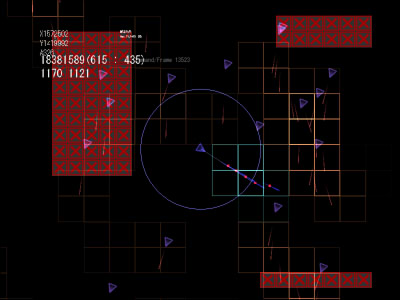
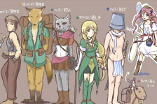

シルバーセカンド開発日誌
2013年04月
■
2013-04-28 (日) 戦術STG（仮） その4▼【今週の落書き】
シカ系！
【戦術STG フェイズ4までおおざっぱに】
今週はメインとなるAIの調整を中心に、兵装の切り替えのための下処理など
フェイズ3【AI】とフェイズ4【自機のカスタマイズ】に手を付けた状態です。
基本的な挙動ができてくると、徐々に何ができるかのイメージが
できるようになってくるので、ここからがゲームの素質を見極める段階！
ひとまずのα版の予定期間をむかえるので、
この辺りで最低限の機能の追加を切り上げて、次は
「どういうところに駆け引きを設けるか」
「どういう順序でゲームになれてもらうか」
「どういう要素にワクワクできるか」といった、
主軸となる部分を検討していきます。
本作はまだまだ出発点にも到達していない段階、
もうちょい粘ってみようと思います。
次段階としてはその検討をしつつ、
ゲームとして最低限の駆け引きが生み出せるよう、
データやステージバリエーションの作成です。
モノリスフィアのときも、まずはステージを全部作ってから
ストーリーを入力していきましたからね。
そして、それが終わったら楽しい画像作成タイム！
画像が投入され始めると途端にゲームが面白くなった気がして、
作っている身としてもモチベーションが大爆発します。
ただし、それに入るのはゲームの基幹部が面白いという実感ができてから！
画像から作ると、『一見面白そうなゲームに見えるんだけど実際遊んでみると
ゲーム部分が大したことなかった』ということにもなりがちなので、
まずは現状ある分のモチベーションで、
画像がない状態で限界まで面白くしてからです。
ほぼ記号だけの状態で作り続けるのはけっこう気合がいりますが、
失敗した場合でも大事な部分だけ残して気兼ねなく放り捨てられるのが魅力的。
モチベーションがなくなってきたら画像周りに移ってブーストできるので、
ロケットの二段目として温存しながらしばらくがんばります。
本作自体があまり期待されていないのは承知の上！
以下は拍手コメントです。いつも本当にありがとうございます。
＞ちょっと疑問なんですが、脱獄事件のイ○オが○脱獄犯を .
＞かくまった理由について、解明出来る仕様になっているのでしょうか？
＞狐狩先生の推理段階でずっと「分からない」で妥協しているので…… .
その点は解明できない形になっていたような気がします。
裏設定だと旧友だったとか決めていたような記憶があるんですが、
情報のはさみどころがなくてそのままになってたような……。
＞（片道勇者TRPGを遊んでくださっている方から）
＞お忙しいと思いますがこちらのシートを張り付けさせていただきます。
＞こちらはセッションはもう１５回を数えていて、
＞シナリオ的にも折り返し地点を過ぎたところ、でしょうか。
ありがとうございます！ ってまだ27日しか経ってないのに15回！？
TRPGは、ルールも必要に応じて付けたし放題なのが魅力なので、
どんどん作ってみてください！情報いただければ参考にさせていただきます。
リプレイ作って仲間内にでも公開したりすると、いい思い出になりますよね。
（公開されているならぜひ読みたいという人も
たくさんいると思いますよグヘヘ！）
＞「いやー、楽しかったw 片道勇者TRPGリプレイ読み始めると
＞ 止まらないですね。GM大変でしょうがこれからも楽しみにしています」
＞「ｻﾌﾞﾗﾋ帰還おめー しかし和服に着替えたらもうハムイじゃなくなる希ガスｗ」
＞「ElonaネタにエクトルのMPダメージにほか色々と、笑いまくりでしたw
＞ 何のツールを使ってプレイしているのかが気になります
＞「サブラヒの瞳のハイライトが消えたけどバケツ被ってれば問題ないよね!」
TRPGリプレイ、読んでくださってありがとうございます！
最新の4話ではハムイが大人気ですね。4話では、ちょい役NPCが
予想外に仲間に加わって、ＧＭは少しだけ頭を抱えていました。
ツールは、Googleスプレッドシートと、
Skype用のダイスボットを改造したものを使用しています。
「どどんとふ」のようにTRPGに特化したツールもありますので、
このあたりは人によってお好みのものをお使いください。
最近教えていただきましたが「富士見書房公式 TRPG ONLINE」という
サービスもあるようで、こちらも使えるかもしれません。
ダイスが振れてマップを書いたり張ったりできるならあとは工夫次第！ ■
2013-04-20 (土) 戦術STG（仮）3▼【戦術STG AI作成中】
低負荷で動くAI作りに苦戦中です。実際開発してみると、AIだけで
1フェイズ以上丸々取っても足りないくらいでした。
AI作成は、次回から時間配分に気を付けたい部分ですね。
＜アルファ版 動作映像＞
次は、敵が弾を発射する処理や回避行動を取るような処理を実装予定です。
ここでどのくらいゲームを奥深くすることができるかが決まりそうなので、
残りの時間で、このあたりを突き詰めていく感じになるかもしれません。
時間が残れば、武器のバリエーションを増やしてみたり、
ミッション進行用のスクリプト処理の実装をしてみたりして
ゲームの素質を計る段階に入ります。
まだまだ個性らしい個性を持たない段階です、基本挙動はなかなか自分好みの
雰囲気になってきたので、ここから自分らしい味を付けていきたいですね。
【片道勇者TRPGリプレイ4話公開】
で、こちらは気晴らしで編集していたTRPGリプレイです。
今回は街で繰り広げられるややカオスなお話。
ハムイの復帰やＴＲＰＧらしい予想外の展開など、今回は見所満載です。
普通のゲームにはできない自由度が、ＴＲＰＧの一番面白いところです。
その分、ＧＭの人は大変かもしれませんけれど、一方のゲーム開発は
相手がいない状況で反応の先の先を予想して作らなければいけないので、
ある意味ではＴＲＰＧのほうがラクだと思うときもあります。
【片道勇者TRPG リプレイ公式】
なお、分かる人から見るとちょっと下品気味な展開ですが、健全な人が見れば
よく分からない内容ですのでレーティング的には大丈夫だと思います。
年度が替わって、忙しい時期です。
学生の皆さんや新社会人の皆さんも大変だと思いますので、
お体にはどうかお気を付けください。
私も色々あって消化能力が激減しています。 ■
2013-04-14 (日) 戦術STG（仮） 2▼【戦術STG フェイズ3まで】
細切れの時間でぼちぼち進めています。
【２】敵ユニット＆基本的なAIの作成
【３】低負荷な弾vsユニットの当たり判定・弾のヒット処理
フェイズが【5】あるうちの、この【2】【3】部分までほぼ完了しています。
【2】の【基本的なAI】が残っています。
また、【3】の当たり判定処理の処理負荷の大きさにだいぶ不満があるので、
ここからさらに改良を加えていく必要がありそうです。
ようやく、画面がちょっとゲームっぽくなってきました。

弾を囲む□の部分が、弾の当たり判定をチェックしている範囲。
弾の□のブロック内に敵機体が入っていれば
初めて当たり判定がチェックされる、という方式で、
シルドラゼロのときのような単純な総当たり処理（弾x敵全部チェック）で
やるよりも処理量の増え方が穏やかになります。
ただし最低処理量がちょっと重くなるのが難点。
残る部分は以下の通りです。あと二週間！
【４】自機カスタマイズ機能の実装
【５】簡単なイベント実行機能
ただ、これらは最悪飛ばして、ゲーム性の基礎部分や処理負荷削減を
研究するほうに費やすかもしれません。
α版で一番気になるのは処理負荷ですね。
開発の順序としては、「どこまで量的な自由度を持たせられるか」を判断した後、
じっくりネタを考えていきたいなと思っています。
敵や味方の数がそれほど出せないなら、物量戦よりは質的な戦いを
演出したほうがいいでしょうし、逆なら、幅広いバリエーションが展開できます。
【片道勇者TRPG 3話公開！】
こちらも第三話をアップいたしました！（4/9）
今回は、最初の街から次の街への過酷な移動シーンです。
【片道勇者TRPG公式ページ】
次回4話では、ハムイとの再会や、私の作品に散見されるくらいかそれ以上の、
ちょっとあっち系のネタが繰り広げられます、期待してくださっている方はぜひ。
今後も、隔週くらいでリプレイをアップできればいいかなと思っています。
編集作業は頭が働かなくなってもやりやすい作業なので、
お仕事やゲーム開発に疲れてどうしようもなくなったときに
ちょっとずつ進めることにしています。
また、バランス調整もちょいちょい行っていますので、
そのうちルールページも最新版にいたします。
驚いたことにすでに遊んでくださっておられる方もいるようですので、
数値がイマイチだなーと思われる方は、ハウスルールで
自由に数値調整してくださったり、データを追加して下さって結構です。
オリジナルの数値設定は、ものすごくデッドリィ＆シビアめです。
たとえば剣士なんて、(状況によって【捨て身】して)【強打】【居合い】連打で
自分のＨＰが0近くになるまで【連続攻撃】を叩き込む鉄砲玉スタイルを
想定していますが、片道勇者的にはそれでいいかなと思っています。
以下はいただいた拍手コメントです。
＞TRPGを知らないせいかイマイチよくわからんです…
＞あの文章はウルフさんが書いてるんですか？ .
あれはプレイヤー5～6人と私（ＧＭ）が集まって、
チャットで進めた会話・お話の内容を編集したものです。
それぞれのキャラクターのセリフは各プレイヤーの人が担当しているので、
私が実際に書いた文章は『ＧＭ』の発言のみです。
なので、キャラ間で変な会話が展開されていても私自身は割と関係ないんです！
本当です！ ちょっとだけ火に油を注ぐときはあるかもしれないけど！
ただ実際問題、ＧＭが変なことばっかり言ってるとストーリーが進まないので、
ＧＭの立ち位置でハジけるのって案外難しいんですよね。 先週はエイプリルフールやらリアル事情やら何やらで
けっこうドタバタした一週間でした。
【エイプリルフール企画】
【4/1】
片道勇者のゲーム内で語られなかった世界観の細部がリアレンジされ、
『片道勇者TRPGリプレイ』として再誕！
新たに繰り広げられる片道勇者達の物語に刮目（かつもく）せよ！
……と、いうことで、今年はエイプリルフール企画として
【片道勇者TRPGリプレイ】をアップさせていただきました！
といっても完全なジョークじゃなくて本物のリプレイですし、
片道勇者の世界観の補完というのも本当です。
が、完結については、十分ウソになりえます！
【片道勇者リプレイ 公式ページ】（新規ｳｨﾝﾄﾞｳ）

ゲームマスターは私です。
ルールも大河物語(ｱｰｶｲﾌﾞ)を参考に一通り作っていますが、
今のところは判定と基本データのみなので、
これ以外は自前で準備する必要があります。
ひとまず、しばらくはまだ続く予定です。
ゲーム開発に疲れたときにちょいちょい編集しているので、
そのうち三話もアップできると思います、続きが見たい方はご期待ください。
今後のメインは、引き続き【戦術STG】のプロトタイプ開発です。
4月末まであと23日！
以下は拍手コメントです。
＞「なんかすごいアーマークラスが低そうな人がいる……！」
＞「リーナ頑張れ 超頑張れ」 .
＞「なにこれすごい……キャラメイクして楽しんでます」 .
＞「毎年思うが・・・やりすぎだｗ」 .
見てくださってありがとうございます！ルールまで読んでくださった人が！
2話までだとサントリナとハムイが特に人気のようですね。
遊ぶ人がいるかは分かりませんが、ルールは今後もバランス調整予定です。
（初期版だとちょっと狩人の攻撃力が強いので命中を少し減らすとか）
＞TRPG初めて見ましたが、とっても面白かったです！
＞今後も楽しみにしてます！ .
こういうTRPGリプレイは、書店でも売っています（ルール・世界観は色々）。
面白そうなのがあったらぜひ手に取ってみてください！
普通の小説も面白いんですが、ほぼ全文に人間らしさが
にじみ出ているTRPGリプレイも、まったく別の面白さがありますよ。 2013年04月
Copyright © SmokingWOLF / Silver Second
 カテゴリ: ﾌﾟﾗﾈｯﾄﾊｳﾙ
カテゴリ: ﾌﾟﾗﾈｯﾄﾊｳﾙ カテゴリ: ﾌﾟﾗﾈｯﾄﾊｳﾙ
カテゴリ: ﾌﾟﾗﾈｯﾄﾊｳﾙ